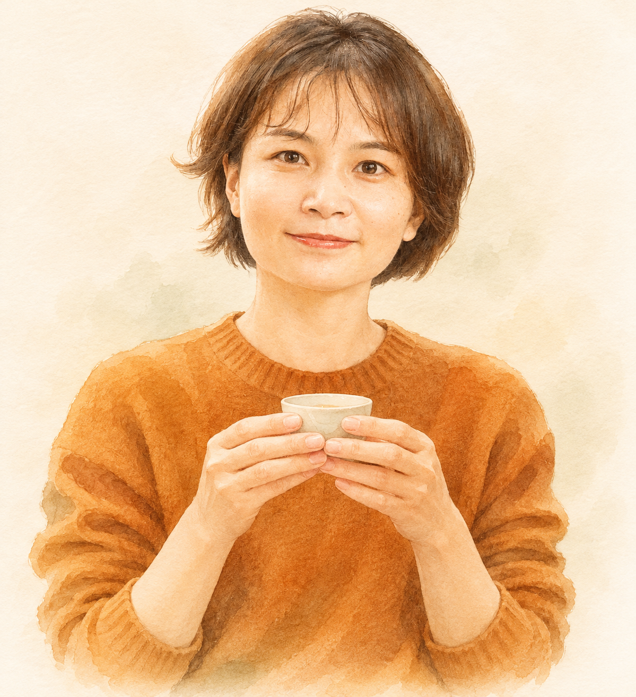

你好，我是刘迷糊。
做正念冥想的研究，
也带练习。
我目前在浙江大学心理系读硕士，研究方向为正念冥想，也带领线上、线下的团体与一对一练习。
往下看，看完直接联系我。

2013年，我第一次接触冥想。起初只是好奇，后来开始规律练习、带领他人，也经历过怀疑和暂停。如今，我在浙江大学心理系研究正念冥想。带着这些年的体验与疑问，我一直走到了现在。
把实践中的好奇，
带进研究。
进入浙江大学心理系之后，我把多年练习和带领中积累的好奇带进了研究：不同的练习设计会怎样影响注意、觉察与情绪体验，这些变化又能不能留在日常里。
展开读研究的来龙去脉 →
我关心的是：不同的练习方法与设计，会怎样影响人的注意、觉察、接纳和情绪体验？练习里发生的变化，能否保留下来，进入日常生活？
我希望把研究中获得的理解带回实践，更清楚地认识什么样的练习适合支持哪些过程，并据此设计引导与练习方案。
在VR冥想课题中，除了练习者的主观体验，我也有机会借助脑电记录，从另一个角度了解练习中的变化；后续还计划结合心率记录继续探索。
在这里，也把一些想法做成了具体的工作。
4周正念亲子团体辅导
独立原创设计并实施，获2026年浙江大学心理系应用心理大赛三等奖。
正念情绪调节（MERP）
独立原创设计并实施，截至2026年11月，近400人加入练习；获2026年浙江大学心理系应用心理大赛三等奖。
2023
怀疑与暂停，练习仍留在生活里。
那一年我暂停了带领，备考、工作；冥想只以最简单的样子留在生活里。
图书馆里学累了，注意力散了，
我就那样静静地坐一会儿。
现实生活中的诸多变动和挑战，让我产生了很大的自我怀疑，也开始怀疑自己做冥想这件事，以及这件事本身。
与此同时，我在备考浙江大学心理系研究生，也做着一些产品经理的工作，没有太多时间和精力继续投入。
那一年，冥想以这样一种简单的方式留在生活里，让我恢复些精力。
后来选择研究方向时，我仍然纠结。我喜欢冥想，但之前的经历又让我从现实的角度，有些不敢选择它。
直到有一天晚上，从图书馆回家的路上，经过一个停车场，我脑海里突然冒出一个念头：“我就是要去学正念冥想，我什么都不管，我就只学它。”
那一刻，我很激动，又有些想哭。那个瞬间，让我重新回到了冥想这件事上。
2015 — 2022
规律地练习，也逐渐开始带领。
从2015年起规律练习，也开始带领线上、线下的团体与一对一。
对我而言，冥想带来的一个变化，是更容易觉察自己的念头和情绪，也多了一点选择怎样回应的空间。我依然会有困扰，但有时能停一下，不那么快地跟着习惯走。
从好奇开始。
2013年接触冥想，从最初的好奇与尝试，到2015年开始规律练习。